Recent readings

 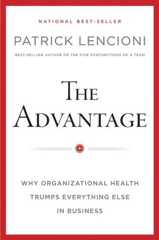
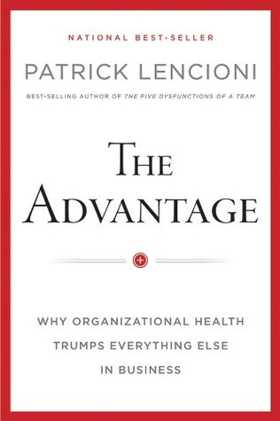


 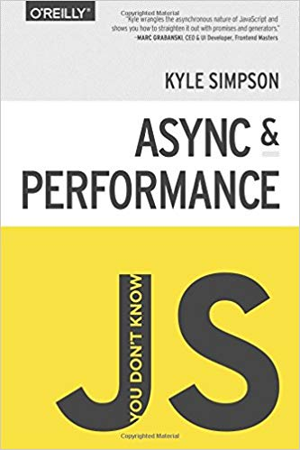
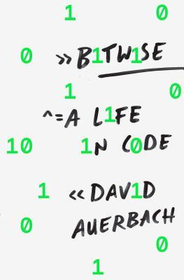
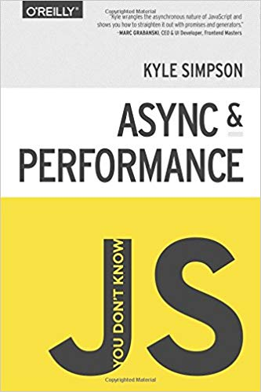
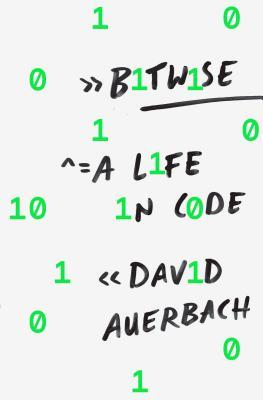


 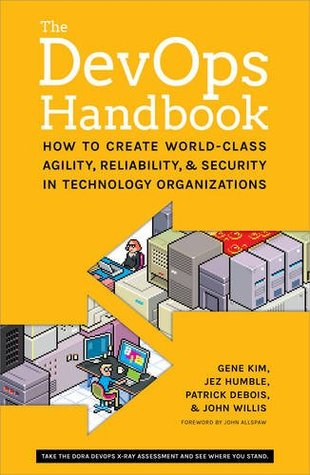
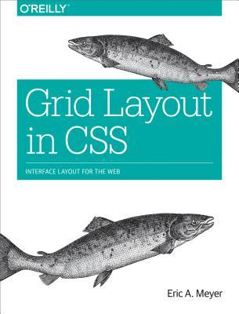
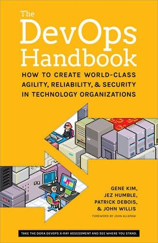
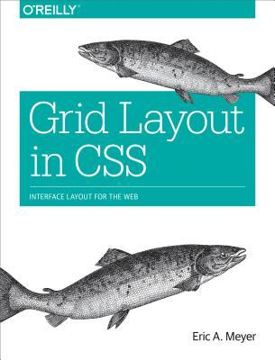
 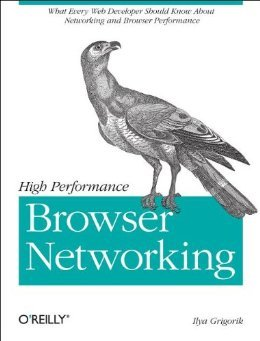
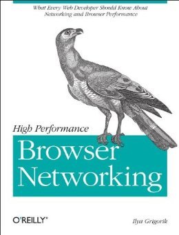
 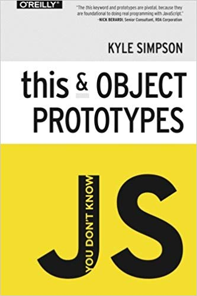
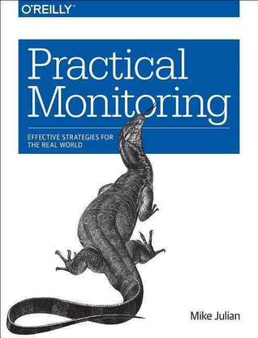
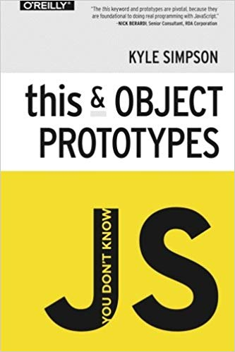
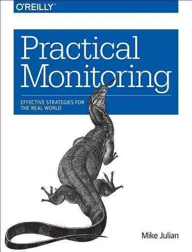
 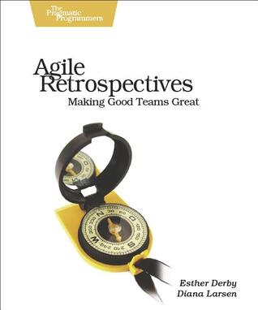
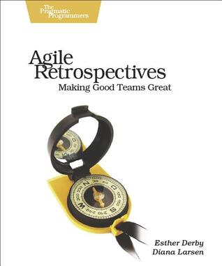


 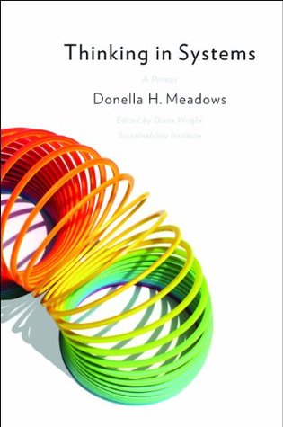
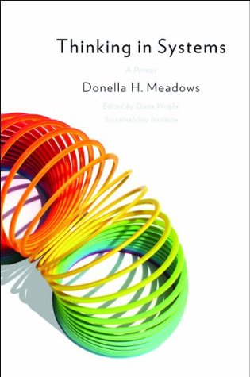

Generalist, learner, problem solver, collaborator. Simplicity should be inherent in the system.
More of this towards the bottom.
Incubating various scale-needy applications on the EVM.
CircleCI is a leader in continuous integration and delivery allowing teams to build and deliver great software quickly and at scale either in in the cloud or on a self-hosted server. Being part of the "money team" provided a great view into some of the back office operations and what it takes to keep the cash moving.
Pivotal Tracker is responsible for providing users with a real-time, event based, multi-tenancy in an opinionated, industry leading project management tool. Pivotal Cloud Foundry is the foundation for providing Fortune 500 Companies with a IaaS provider agnostic, secure, highly scalable application development and infrastructure management platform (think Heroku).
Designed and built the customer-facing web interface centralized around the Splickit API. Rich client-side interaction, a multi-branded platform with individual theming capabilities, multi-service integration. Startup jockey adopting roles ranging from product to support. Mobile first design, with seamless integration to the Splickit native application ecosystem.
Worked on a variety of core web applications and technical projects. Migrated 40+ million users to a centralized authentication service, with functional integrations across the entire MapQuest ecosystem. Development of internal administration tools, MQ Travel, Travel Blogs, Discover, MapQuest.com re-write.
Officially responsible for overhauling an aging web interface that acts as the first contact for thousands of scientists and researchers within NCAR, NOAA, NASA, and over one-hundred other research institutions. Ground up construction of a mobile web-interface port for browsing satellite imagery, KMLs, OpenLayers maps and project flight tracking. Consistent delivery of project-wide re-factors, debugging, and other functional enhancements.
Similar in nature to the S.U.P.E.R. internship position, however with added responsibility. This primarily included quickly adapting to production-ready development practices, intensive version control integration (Git), Rails best practices and Agile development methodologies.
A guided internship for emerging engineers that has an emphasis on establishing real-world development standards. This internship program has a strong history of developing highly desirable software for use with large-scale field campaigns. Directly responsible for rapidly developing a high quality automated monitoring system for field project research data and related support systems (Nagios based).
Nerding out while reinventing the technological paradigm on campus through student-based initiatives, software development, and hardware maintenance. This position offered me a fantastic opportunity to produce, design, and solicit feedback on behalf of the students of MSUD.
Collaborative engagement with Metro's IT administrators for improving the usability, accessibility, and technological focus for students on campus. I was the student liaison for all students on Metro's campus. This placed me as the #1 contact and voice for all needs, matters, and inquiries technically related.
A student appointed committee responsible for allocating $2.9 million of student fees to student organizations and other campus-related services.
This job involved heavy usage of whiteboards, strings, and for loops. A position that requires a strong ability to communicate and teach effectively. This position was a fantastic experience for reinforcing key Computer Science fundamentals, but also acted as a powerful tool for enhancing my interpersonal and explanatory abilities.
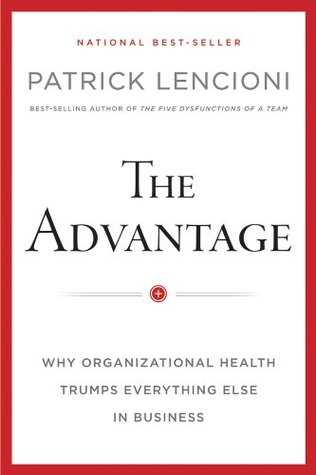
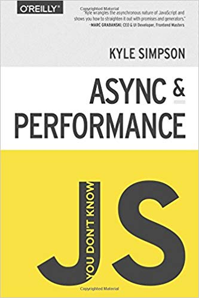
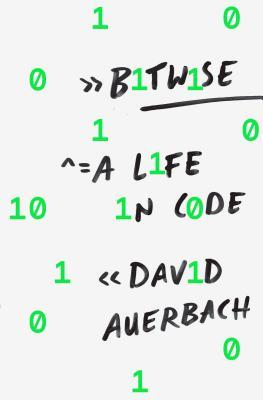
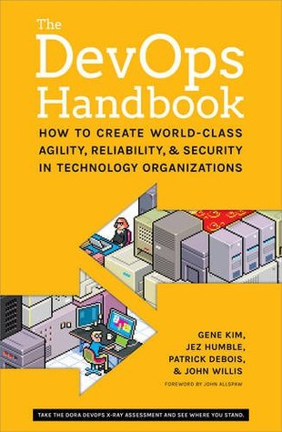
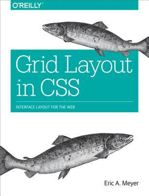
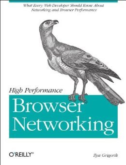
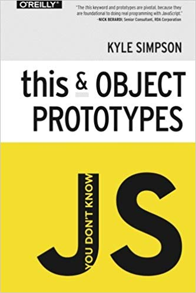
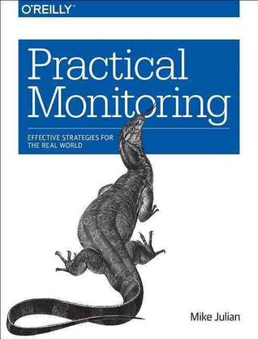
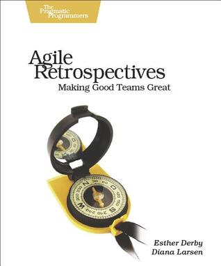
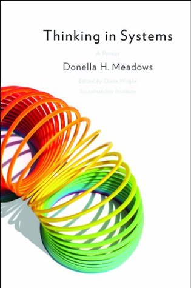